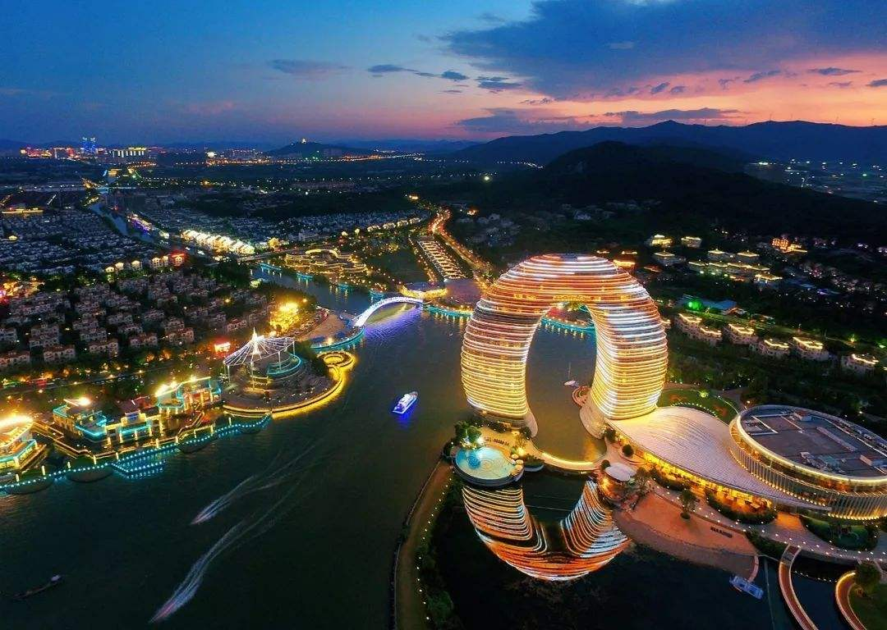
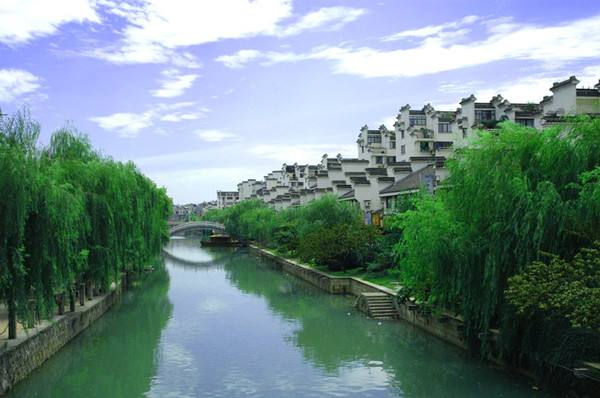
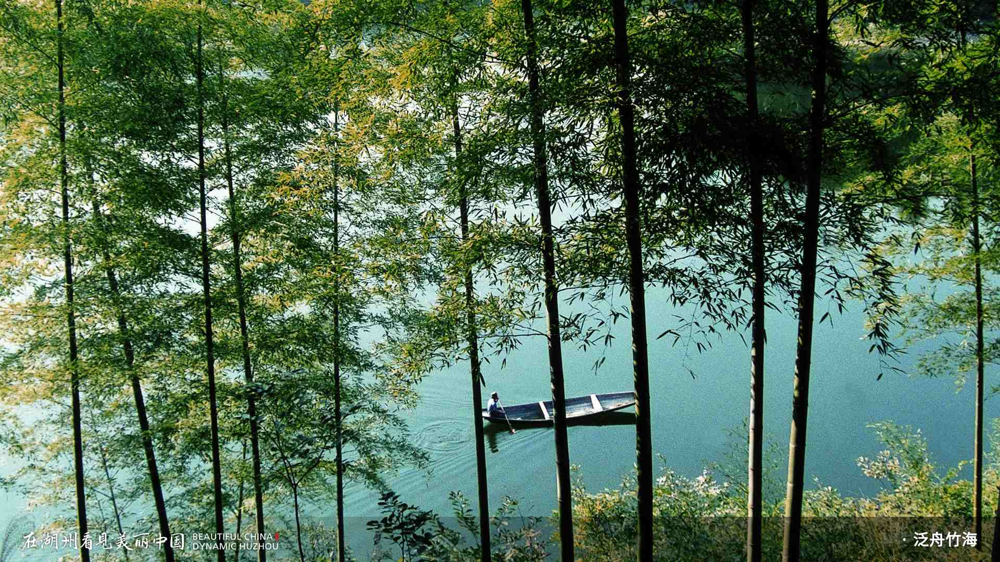
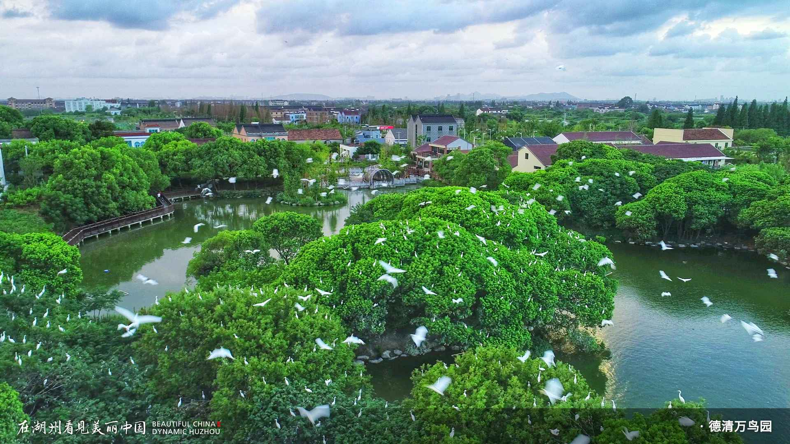

走进湖州
地理环境，区位优势明显。湖州市是浙江省下辖地级市，是长 江三角洲中心区27城之一、环杭州湾大湾区核心城市、G60科创走廊中心城市，地处 浙江省北部，东邻嘉兴，南接杭州，西依天目山，北濒太湖，与无锡、苏州隔湖相望， 是环太湖地区因湖而得名的城市。处在太湖南岸，东苕溪与西苕溪汇合处。湖州距杭州 75公里，距上海130公里，拥有全国一流的铁路、公路与内河水运中转港，杭宁、商合杭、 沪苏湖、湖杭(西)高铁在这里十字交汇，湖州成为长三角地区重要交通枢纽城市，乘坐高 铁，从杭州，南京到湖州分别只需20分钟和50分钟，从北京到湖州也只需4个多小时，届时 从上海到湖州只需30分钟。交通非常便利。  历史悠久，文化底蕴深厚。湖州是一座具有2300多年历史的江南古 城，建制始于战国，湖州是丝之源、笔之源、茶之源、瓷之源、酒之源,素有“丝绸之府、 鱼米之乡、文化之邦”的美誉，宋代便有“苏湖熟，天下足”之说。有众多的自然景观和 历史人文景观，如莫干山、南浔古镇等。 湖州是国家历史文化名城 、 国家森林城市、 国家园林城市 、国家卫生城市，有双渎雪藕、太湖百合等土特产品，同时也是近代湖商 的发源地。  山水清丽、生态环境优美。“山从天目成群出，水傍太湖分港流，行 遍江南清丽地，人生只合住湖州。”这既是元代诗人戴表元对湖州最宜人居环境的赞誉， 也是今日湖州生态的真实写照。2005年，习近平同志到湖州安吉调研，首次提出了“绿 水青山就是金山银山”的重要思想，湖州开启了“两山”重要思想诞生地、中国美丽乡村 的发源地、生态+的先行地、太湖流域生态涵养地的生动实践。  社会和谐、发展势头强劲。 2017年11月，荣获第五届全国文明城 市。2017年12月24日，湖州入围2017中国特色魅力城市200强。2018年3月，入围第一 批通过全国水生态文明建设试点验收城市名单。2018年12月，2018中国大陆最佳商业城 市排名第47，2018中国大陆最佳地级城市30强，中国创新力最强的30个城市之一，2018 中国最佳旅游目的地城市第20名。 2019年8月，入选全国城市医疗联合体建设试点城市。2019年8月28日，入选第四批中央 财政支持开展居家和社区养老服务改革试点地区名单。2019年9月23日，“2019年中国百 强城市排行榜”发布，湖州排名第67。2019年11月3日，“中国城市绿色竞争力排名TOP 100”发布，湖州排名第96。2019年11月6日，入选中国地级市百强第17名。2019年11月 21日，“2019中国地级市全面小康指数前100名”第20位。2019年11月25日，入选“2019 中国城市品牌评价百强榜（地级市）”。2019年12月7日，入选“2019年中国康养城市排 行榜50强”。2020年1月，“中国城市科技创新发展指数2019”发布，湖州排名第40。2020 年1月，入选“特色型信息消费示范城市”。 